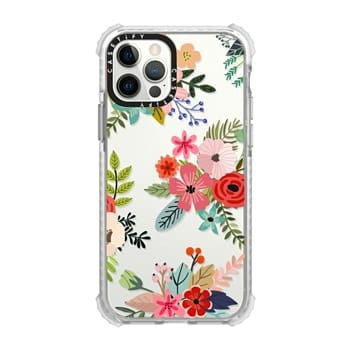
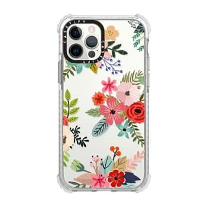

Muy pocas veces nos preocupamos de las características que toda buena funda debería garantizar a nuestro teléfono como perfecta fórmula de la eterna juventud.
Está claro que vivimos en la era de la comunicación y de la tecnología, no podemos pasar mucho tiempo sin mirar el móvil y mucho menos sin llevarlo a cualquier parte. El hecho de acudir con tanta asiduidad a ellos los han convertido en casi elementos imprescindibles de nuestra vida, motivo por el que cuando los compramos, además de por su elevado coste, queremos protegerlos constantemente de accidentes, derrame de líquidos o caídas para que se mantengan eternos. Normalmente nos decantamos por elegir una funda pero sin embargo muy pocas veces nos preocupamos de cuáles son las características que toda buena funda debería garantizar a nuestro teléfono como perfecta fórmula de la eterna juventud.
Paso 1: tienes que mandarnos un mensaje directo por instagram o por cualquier red social en la que estemos disponibles, ahi te haremos una preguntas para poder llevar a cabo tu pedido.
Paso 2:Elegir el tipo de letra y el diseño para que nosotros podamos crear tu funda.
Paso 3: Si deseas algun diseño creativo que no este en nuentros catalogos, tienes que mandarnos algunas esecificaciones para poder realizar tu funda.
Paso 4: Espera que llegue tu pedido


 
